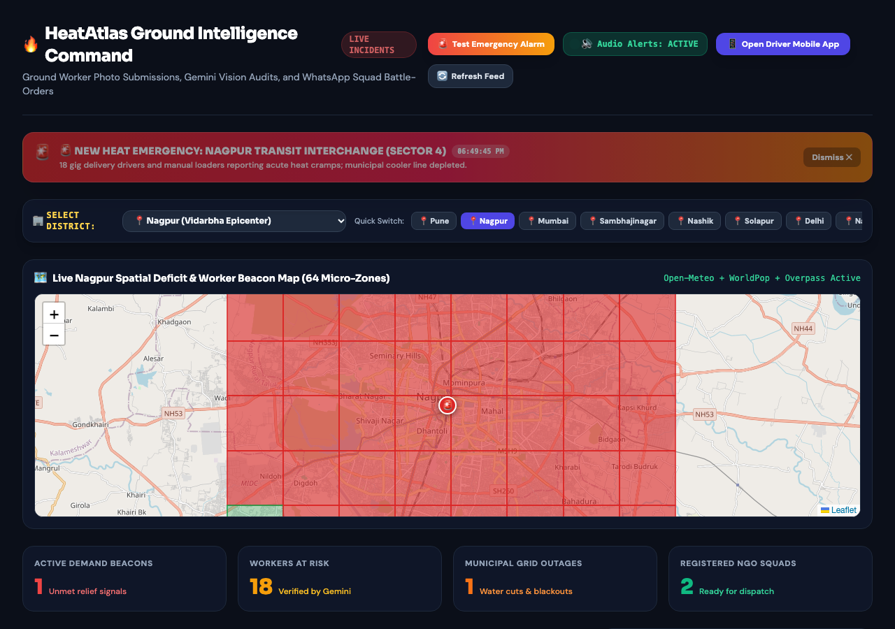
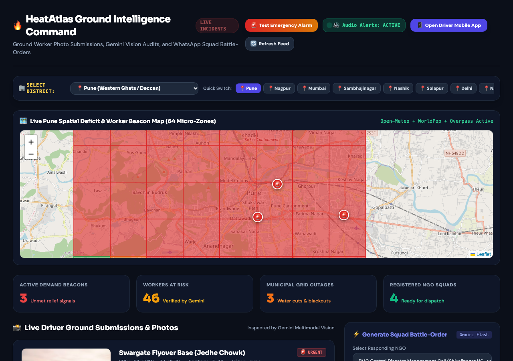
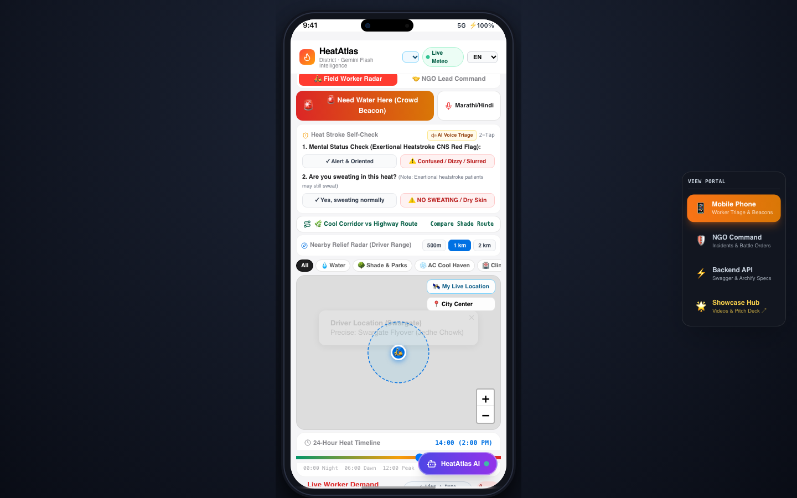
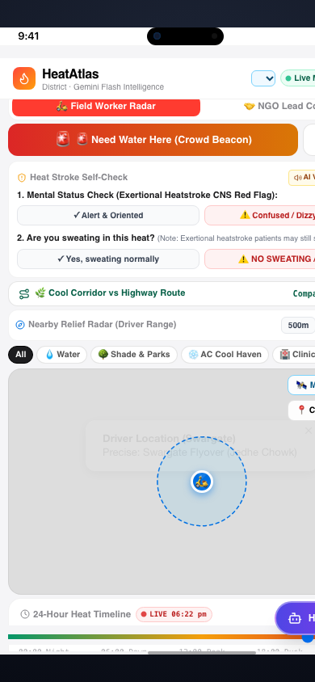
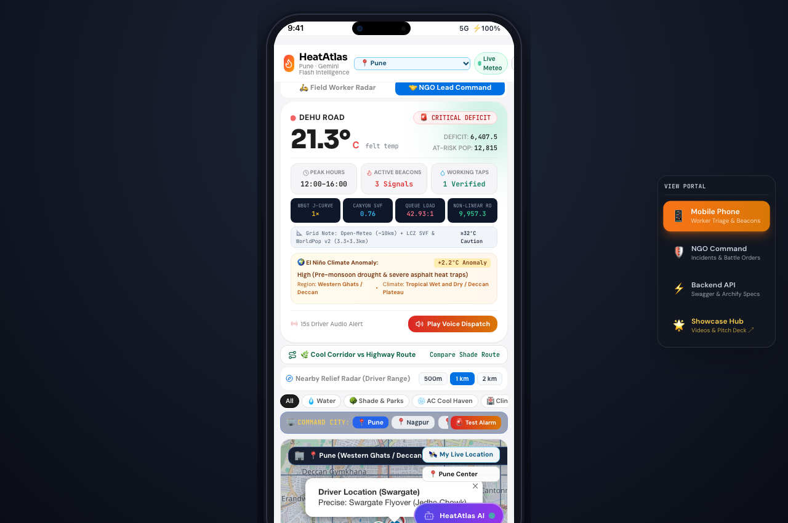
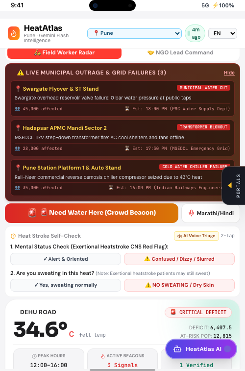
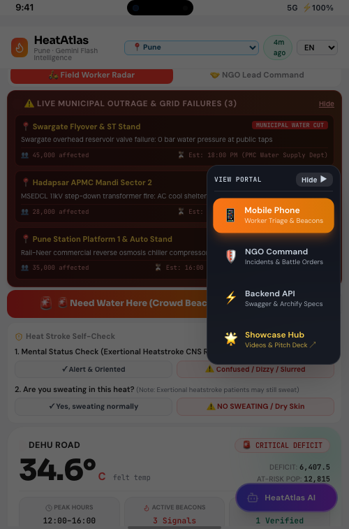

Ground Intelligence Command & Live Audio Alarm
Real-time incident alert banner with dual-tone Web Audio chime and district city switcher.

Ground Intelligence Command (Pune District View)
64-ward spatial deficit heatmap, photo-verified crowd beacons, and WhatsApp battle-order generator.

Field Worker Radar & Thermal Telemetry Bento
Zero-dummy-data citizen interface with SOS beacon broadcasting and cooling route comparisons.

24-Hour Scrubber with Real-Time Local Hour Auto-Sync
Automatically syncs to the city's current local hour upon load with dynamic 'LIVE' badge.

NGO Lead Command Center & On-Map City Selector
Embedded iPhone 14 shell with floating bounded map controls and test alarm action.

Mobile Collapsible Telemetry Drawer (Closed vs Open)
Toggle between full-bleed geospatial navigation and detailed ward telemetry.


Official 6-Slide Pitch Deck Gallery
High-craft slides covering Problem, Solution, Architecture, Concave DP Solver, Impact, and Team.